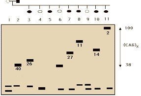

Recombinant DNA Technology Problem Set
Problem 7 Huntington's disease 1
The data below shows the results of electrophoresis of PCR fragments amplified using probes for the site which has been shown to be altered in Huntington's disease. The male parent, as shown by the black box, got Huntington's disease when he was 40 years old. His children include 6 (3,5,7,8,10,11) with Huntington's disease, and the age at which the symptoms first began is shown by the number above the band from the PCR fragment.

What is the prognosis for the normal children 4, 6, and 9?
A. 4 and 9 do not have the trait, and will not get Huntington's disease, but 6 is likely to start the disease when he reaches his father's age of 40. Children 4 and 9 do not have an amplified CAG repeat, and their PCR product migrates with control normals. Child 6 is currently normal, but has an allele with approximately the same number of repeats as the father. Thus, you could expect the child to develop Huntington's disease when he/she reaches 40.B. 4, 6, and 9 are lucky and have not inherited the defect causing Huntington's disease. C. 4, 6, and 9 will still develop Huntington's disease at some point in their lives, since the disease is inherited as a dominant trait. D. Two of the three will develop the disease, since it is inherited as a dominant trait, but the data does not allow you to predict which two. E. 4, 6, and 9 must be children of a different father, and thus do not carry the trait for Huntington's disease.


University of Arizona
Tuesday, October 29, 1996
Contact the Development Team
http://biology.arizona.edu
All contents copyright © 1996. All rights reserved.